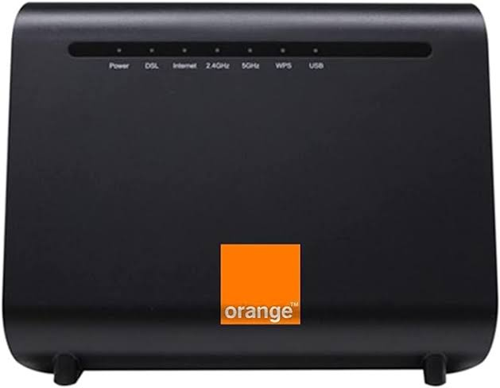
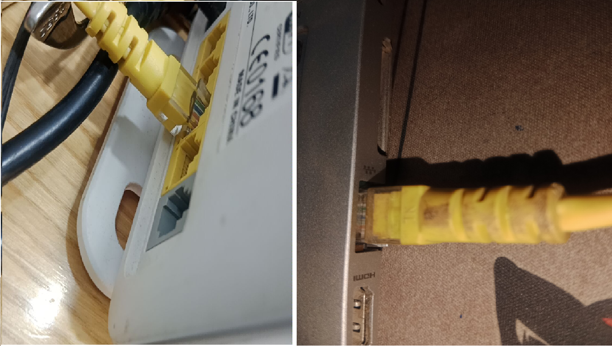
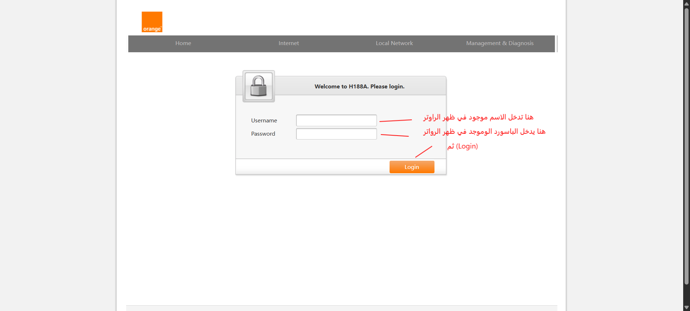
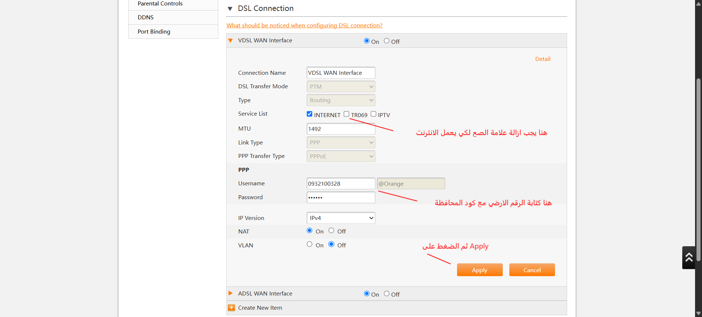
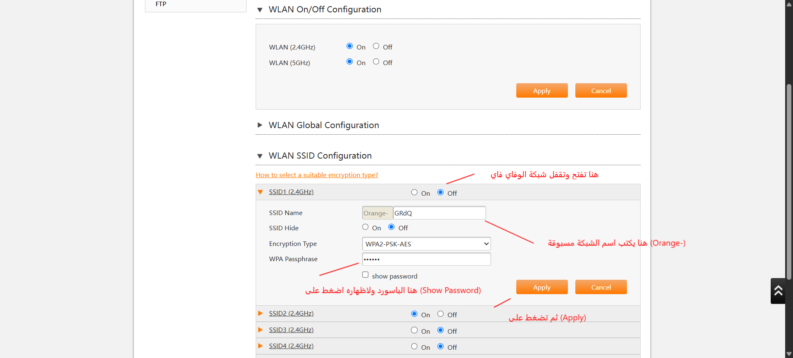
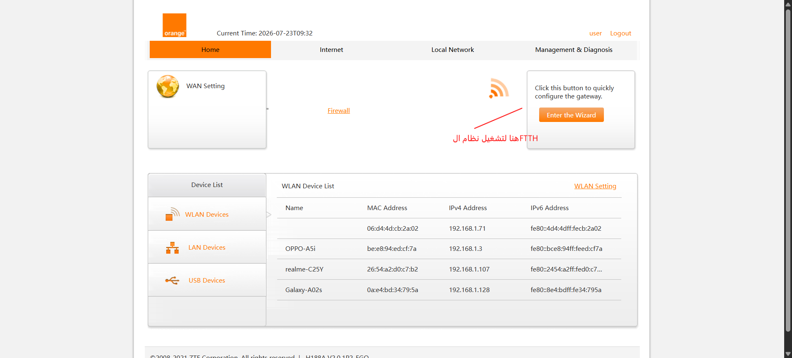
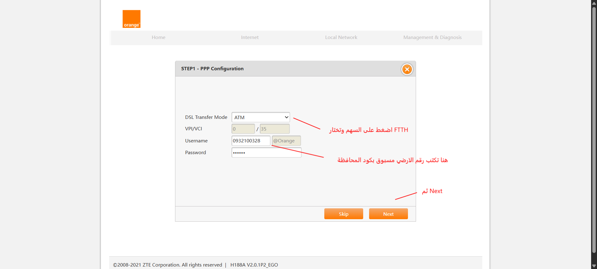
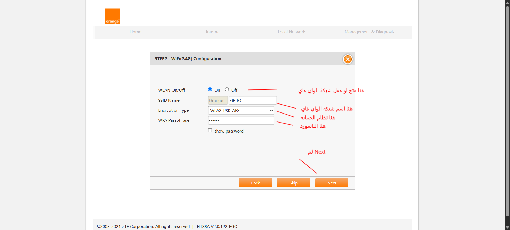
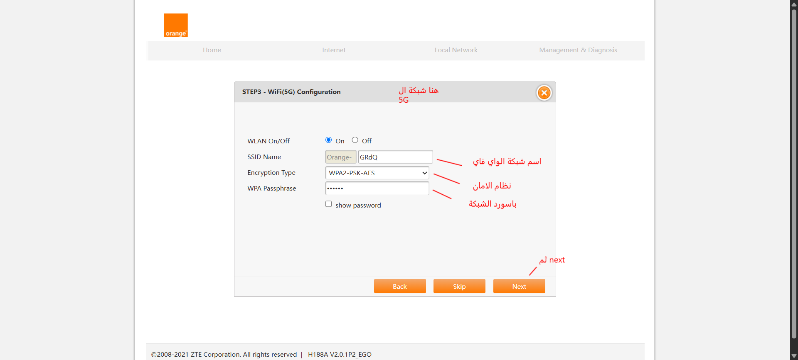
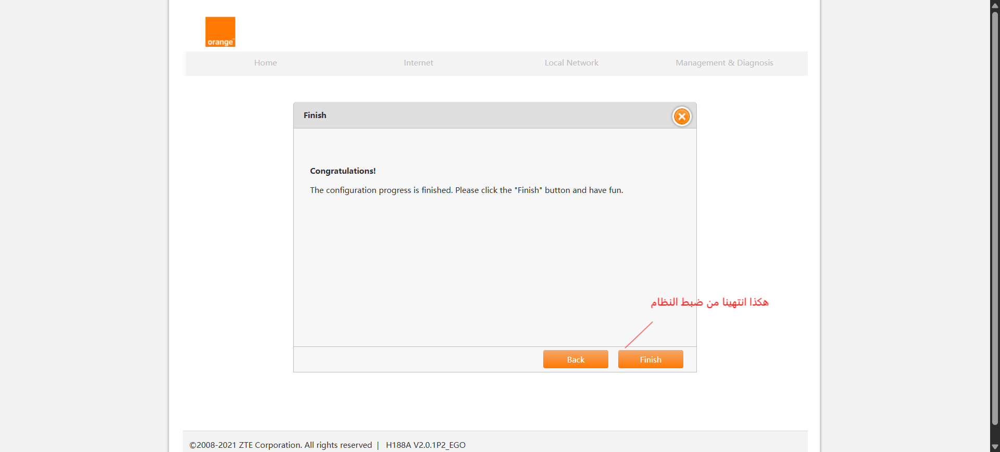

كيفية ضبط الراوتر خطوة بخطوة
هذه الصفحة مصممة لتوضيح الإعدادات الأساسية للرواتر مثل الرقم الأرضي، الواي فاي، وFTTH.
ZTE ZXHN H188A

1) توصيل الكابل والرقم الأرضي
تأكد من توصيل الكابل الأرضي وكبل الLAN الخاص بالكمبيوتر بشكل صحيح ثم شغّل الراوتر وانتظر حتى يثبت المؤشر.

2) الدخول إلى صفحة الإعداد
اكتب عنوان IP الخاص بالراوتر في المتصفح 192.168.1.1 ثم أدخل اسم المستخدم وكلمة المرور في هذا الروتر بعد اعادة الضبط يكون الاسم والباسورد هم admin .

3) يكتب هنا رقم الارضي
التاكد من رقم الارضي صحيح مع كود المحافظة وترك الباسورد كما هولا يغير

4) تعديل اسم وباسورد الشبكة
تسطيع تغيير اسم وباسورد الشبكة وتحديد عدد الاجهزة وتسطيع اخفاء او اظهار الشبكة عن طريق (SSID Hide) عند تفعيلها سوف تختفي الشبكة.
لكي يعمل تظهر الشبكة تريد ادخال اسم وباسورد الشبكة مع نظام الامان في هاتفك او جهازك اللوحي

5) ضبط نظام الحديث (FTTH)
تفتح (Enter The Wizard) كما موضع في الصورة

6) تعديل رقم الارضي
هنا تغير الى (FTTH) وتكتب رقم الارضي مسبوق بكود المحافظة بدون تغيير اي شئ في الباسورد

7) تعديل بينات الواي فاي (2.4G)
ثم بيانات الواي فاي الاسم والباسورد

8) تعديل بيانات الواي فاي (5G)
ثم بيانات الواي فاي (5G)

9) تم ضبط نظام الحديث ال(FTTH)
هنا ينتهي ,تم تفعيل نظام ال(FTTH)
